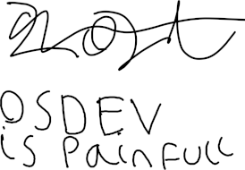

The idea I had from that dream was simple, yet a pain in the ass to work with. I dubbed them kernlets -- These would consist of all the code required to communicate with the hardware (This excludes all BIOS interrupts as these are required to even load the kernlets and kernel to start with). I realised that this idea is able to combine the benefits of a modular kernel and a monolithic kernel. The only downside being without tools it's a pain the ass to deal with.
The OS's development started on my first stream -- this posed a few problems. As I hadn't planned out the OS only conceptualised it. This was a known bad idea, and yet I still did it.
Quickly the code became unreadable and I became demotivated. Both because streaming was going horrendously bad, and the progress of the OS stalled.
It made me feel as if my work was meaningless. That it would never go anywhere and so, I was on the verge of just giving up -- leaving the OS as a failed dream, along with the channel.
But out of boredom one day -- I was reflecting on the OS and the channel. Then realised I needed to restart the OS. If I was to make it go anywhere.
First I considered simply using a FAT file system, but It seemed wasteful to use an entire file system for some headers in the kernel and bootloader.
So, I choose to make a custom file system. It wasn't going to be complex or really even a full file system. Just enough to
It seemed simple in theory, although I knew it would take some effort. I started with the checksumming, It would be a basic adding checksum. Add all the bytes in the kernlet/header together and check if it's the same output the header has. If not its broken.
The file system component was the magic bytes and info. The magic bytes was picked to be the first bytes used. It would be a 32 bit unsigned int. Then the info would be another 32 bit unsigned it. With each bit meaning a different thing. For now the first bit defines if it's for 32 bit mode or 16 bit mode. And the second bit defines if it's for the bootloader for the kernel. As they use different ABI's.
After planning around a few other aspects that didn't take enough time to write about I came up with this format for the kernlets.
Outputs will also be in the same order. Leaving E/AX untouched. Additionally, the bootloader and kernel would use a different offsetting mode. The bootloader will use Segments in the IVT. To ensure the base address is 0x00. The kernel will use either segmentation or paging, depending on if paging is supported and if paging is enabled yet.
This leads me into the last point. The OS was originally meant to be a long mode OS. But it may prove simpler to make a protected mode OS, and add long mode support later or add PAE support later. Also, ABI calls in the bootloader and the kernel will be documented well in an Excel sheet. And the OS will still be in assembly. Just more planned out. As every OS needs to be!
/ZoraDaDev
If you wish to contact me, you can though email at zora.the.low.level.dev@gmail.com
Channel Links: